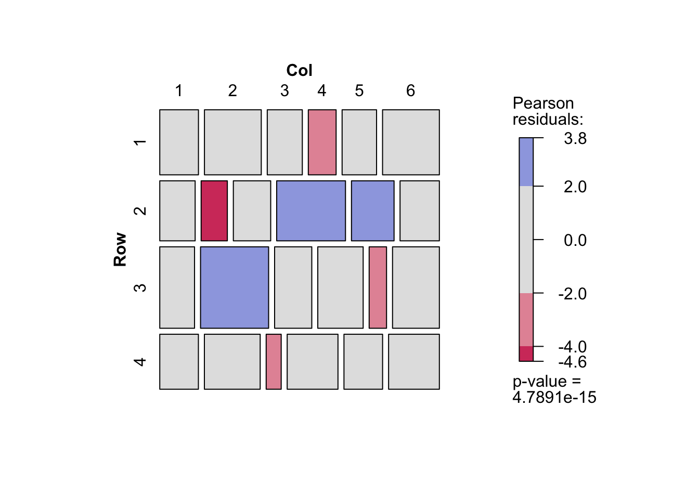
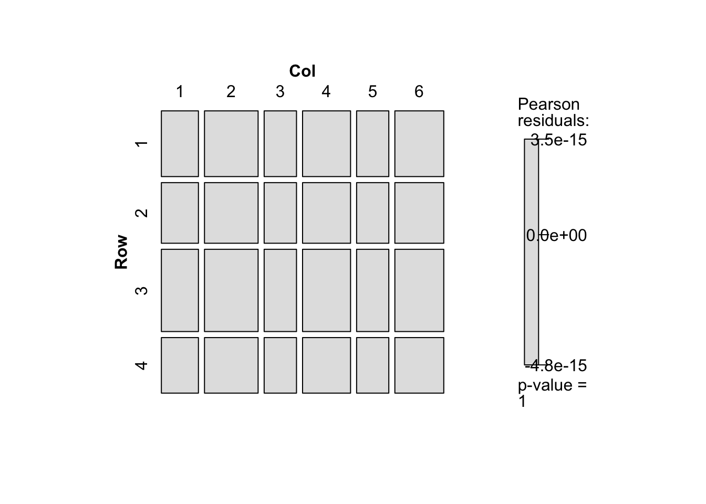
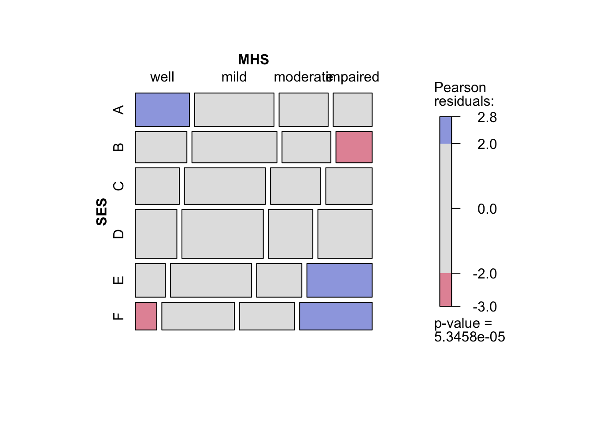

8 補足のノート
8.1 集計データの作成
度数はまず1行目について数値を並べ（1行1列から1行\(I\)列まで），次に2行目について数値を並べる（2行1列から2行\(I\)列まで）．これを
Freqとする．例として「編者による序文」の親の職業と精神的健康の例で考えてみる．これは\(6\times4\)のクロス表なので，まず1行1列から1行4列までの数字を入力し，次に2行1列から2行4列まで入力する．これを3行目から6行目まで繰り返す．表との対応を考えて適当な改行をいれるのもよい．ただしRは改行を入れても入れなくても，単に数値の列（ベクトル）として扱う．
glによって変数を作成する．度数がどの行と列に対応しているのかに注意してほしい．
# 1行1列から1行4列，・・・・，6行1列から6行4列まで順に入力
Freq <- c( 64, 94, 58, 46, 57, 94, 54, 40, 57, 105, 65, 60, 72, 141, 77, 94, 36, 97, 54, 78, 21, 71, 54, 71)
# 表ようにして入力
Freq <- c( 64, 94, 58, 46,
57, 94, 54, 40,
57, 105, 65, 60,
72, 141, 77, 94,
36, 97, 54, 78,
21, 71, 54, 71)- 行カテゴリと列カテゴリの数は\(I\)や\(J\)となっている．
Iを使いたいが，Rの関数にすでに用意されているので別の名前を考える．ここではNIとNJとする．- 例のデータでは，行カテゴリ数\(I = 4\)，列カテゴリ数\(J = 5\)である．
- では，
Freqに対応する行カテゴリと列カテゴリを並べてみる．先程の入力のルールにしたがうと，行については1行1列から1行4列までの数字を入力しているので1,1,1,1となり，次に2,2,2,2となる．これを繰り返し最後は6,6,6,6となる．列については，1,2,3,4が6回繰り返される．
Row <- c(1,1,1,1,2,2,2,2,3,3,3,3,4,4,4,4,5,5,5,5,6,6,6,6)
Col <- c(1,2,3,4,1,2,3,4,1,2,3,4,1,2,3,4,1,2,3,4,1,2,3,4)
class(Row)[1] "numeric"[1] "numeric"- 属性が数値になっているので
as.factor（またはfactor）で因子（factor）に変換する．
[1] "factor"[1] "factor" [1] 1 1 1 1 2 2 2 2 3 3 3 3 4 4 4 4 5 5 5 5 6 6 6 6
Levels: 1 2 3 4 5 6 [1] 1 2 3 4 1 2 3 4 1 2 3 4 1 2 3 4 1 2 3 4 1 2 3 4
Levels: 1 2 3 4- 単純な数値の列を作成したければ
rep関数が便利である．これは整数（integer）となる．
[1] "integer"[1] "integer"[1] "factor"[1] "factor" [1] 1 1 1 1 1 2 2 2 2 2 3 3 3 3 3 4 4 4 4 4
Levels: 1 2 3 4 [1] 1 2 3 4 5 1 2 3 4 5 1 2 3 4 5 1 2 3 4 5
Levels: 1 2 3 4 5glはGenerate Factor Levelsという関数で，repに似ているが，数値ではなく因子を結果として出力する．- 1から
nまでの数字をぞれぞれk回繰り返して出力する．
[1] "factor"[1] "factor" [1] 1 1 1 1 2 2 2 2 3 3 3 3 4 4 4 4 5 5 5 5 6 6 6 6
Levels: 1 2 3 4 5 6 [1] 1 2 3 4 1 2 3 4 1 2 3 4 1 2 3 4 1 2 3 4 1 2 3 4
Levels: 1 2 3 4Freq，Row，Colからデータを作成する．data.frameとtibbleのどちらでもよいが，tibbleの場合は表示させた後に，データの構造（<dbl> <fct> <fct>）が表示される．
Freq Row Col
1 64 1 1
2 94 1 2
3 58 1 3
4 46 1 4
5 57 2 1
6 94 2 2
7 54 2 3
8 40 2 4
9 57 3 1
10 105 3 2
11 65 3 3
12 60 3 4
13 72 4 1
14 141 4 2
15 77 4 3
16 94 4 4
17 36 5 1
18 97 5 2
19 54 5 3
20 78 5 4
21 21 6 1
22 71 6 2
23 54 6 3
24 71 6 4# A tibble: 24 x 3
Freq Row Col
<dbl> <fct> <fct>
1 64 1 1
2 94 1 2
3 58 1 3
4 46 1 4
5 57 2 1
6 94 2 2
7 54 2 3
8 40 2 4
9 57 3 1
10 105 3 2
11 65 3 3
12 60 3 4
13 72 4 1
14 141 4 2
15 77 4 3
16 94 4 4
17 36 5 1
18 97 5 2
19 54 5 3
20 78 5 4
21 21 6 1
22 71 6 2
23 54 6 3
24 71 6 4 - 以上をまとめると次のようになる．
Freq <- c( 64, 94, 58, 46, 57, 94, 54, 40, 57, 105, 65, 60, 72, 141, 77, 94, 36, 97, 54, 78, 21, 71, 54, 71)
NI <- 4
NJ <- 6
Row <- gl(n = NI, k = NJ, length = NI * NJ)
Col <- gl(n = NJ, k = 1, length = NI * NJ)
d <- tibble(Freq, Row, Col)
d# A tibble: 24 x 3
Freq Row Col
<dbl> <fct> <fct>
1 64 1 1
2 94 1 2
3 58 1 3
4 46 1 4
5 57 1 5
6 94 1 6
7 54 2 1
8 40 2 2
9 57 2 3
10 105 2 4
11 65 2 5
12 60 2 6
13 72 3 1
14 141 3 2
15 77 3 3
16 94 3 4
17 36 3 5
18 97 3 6
19 54 4 1
20 78 4 2
21 21 4 3
22 71 4 4
23 54 4 5
24 71 4 6 8.2 GLMとGNMの結果の比較
- glmとgnmでは適合度や係数は同じだが，出力されるものが異なる．
fit_glm <- glm(Freq ~ Row + Col, data = d, family = poisson)
fit_gnm <- gnm(Freq ~ Row + Col, data = d, family = poisson)
fit_glm
Call: glm(formula = Freq ~ Row + Col, family = poisson, data = d)
Coefficients:
(Intercept) Row2 Row3 Row4 Col2 Col3
4.10604 -0.08065 0.22460 -0.16838 0.36930 -0.13588
Col4 Col5 Col6
0.25857 -0.14058 0.27738
Degrees of Freedom: 23 Total (i.e. Null); 15 Residual
Null Deviance: 217.4
Residual Deviance: 112 AIC: 274.2
Call:
gnm(formula = Freq ~ Row + Col, family = poisson, data = d)
Coefficients:
(Intercept) Row2 Row3 Row4 Col2 Col3
4.10604 -0.08065 0.22460 -0.16838 0.36930 -0.13588
Col4 Col5 Col6
0.25857 -0.14058 0.27738
Deviance: 112.0398
Pearson chi-squared: 102.2928
Residual df: 15 [1] "coefficients" "residuals" "fitted.values"
[4] "effects" "R" "rank"
[7] "qr" "family" "linear.predictors"
[10] "deviance" "aic" "null.deviance"
[13] "iter" "weights" "prior.weights"
[16] "df.residual" "df.null" "y"
[19] "converged" "boundary" "model"
[22] "call" "formula" "terms"
[25] "data" "offset" "control"
[28] "method" "contrasts" "xlevels" [1] "call" "formula" "terms" "data"
[5] "eliminate" "ofInterest" "na.action" "xlevels"
[9] "offset" "tolerance" "iterStart" "iterMax"
[13] "coefficients" "residuals" "fitted.values" "rank"
[17] "family" "predictors" "deviance" "aic"
[21] "iter" "weights" "prior.weights" "df.residual"
[25] "y" "converged" "constrain" "constrainTo"
[29] "x" "model"
Call:
glm(formula = Freq ~ Row + Col, family = poisson, data = d)
Deviance Residuals:
Min 1Q Median 3Q Max
-5.0571 -0.4520 0.4274 1.1667 3.5712
Coefficients:
Estimate Std. Error z value Pr(>|z|)
(Intercept) 4.10604 0.07692 53.378 < 2e-16 ***
Row2 -0.08065 0.07104 -1.135 0.256237
Row3 0.22460 0.06600 3.403 0.000666 ***
Row4 -0.16838 0.07271 -2.316 0.020573 *
Col2 0.36930 0.08325 4.436 9.17e-06 ***
Col3 -0.13588 0.09377 -1.449 0.147336
Col4 0.25857 0.08522 3.034 0.002413 **
Col5 -0.14058 0.09389 -1.497 0.134314
Col6 0.27738 0.08488 3.268 0.001083 **
---
Signif. codes: 0 '***' 0.001 '**' 0.01 '*' 0.05 '.' 0.1 ' ' 1
(Dispersion parameter for poisson family taken to be 1)
Null deviance: 217.40 on 23 degrees of freedom
Residual deviance: 112.04 on 15 degrees of freedom
AIC: 274.21
Number of Fisher Scoring iterations: 4
Call:
gnm(formula = Freq ~ Row + Col, family = poisson, data = d)
Deviance Residuals:
Min 1Q Median 3Q Max
-5.0571 -0.4520 0.4274 1.1667 3.5712
Coefficients:
Estimate Std. Error z value Pr(>|z|)
(Intercept) 4.10604 0.07692 53.378 < 2e-16 ***
Row2 -0.08065 0.07104 -1.135 0.256237
Row3 0.22460 0.06600 3.403 0.000666 ***
Row4 -0.16838 0.07271 -2.316 0.020573 *
Col2 0.36930 0.08325 4.436 9.17e-06 ***
Col3 -0.13588 0.09377 -1.449 0.147336
Col4 0.25857 0.08522 3.034 0.002413 **
Col5 -0.14058 0.09389 -1.497 0.134314
Col6 0.27738 0.08488 3.268 0.001083 **
---
Signif. codes: 0 '***' 0.001 '**' 0.01 '*' 0.05 '.' 0.1 ' ' 1
(Dispersion parameter for poisson family taken to be 1)
Residual deviance: 112.04 on 15 degrees of freedom
AIC: 274.21
Number of iterations: 4- 独立モデルと飽和モデル
fit_O <- gnm(Freq ~ Row + Col, data = d, family = poisson)
fit_S <- gnm(Freq ~ Row + Col + Row:Col, data = d, family = poisson)
anova(fit_O, fit_S)Analysis of Deviance Table
Model 1: Freq ~ Row + Col
Model 2: Freq ~ Row + Col + Row:Col
Resid. Df Resid. Dev Df Deviance
1 15 112.04
2 0 0.00 15 112.04- 期待度数を保存すれば期待度数についてのクロス表を作成することができる．飽和モデルの場合は，観測度数のクロス表と一致する．また独立モデルでの期待度数をみると，行によって列の幅が異なっていない（列によって行の幅がことなっていない）ことがわかる．
d %<>% mutate(O_Freq = fit_O$fitted.values,
S_Freq = fit_S$fitted.values)
d %>% xtabs(Freq ~ Row + Col, data = .) %>% mosaic(shade = TRUE)

8.3 モザイクプロット
mentalHealthが用意されているのでこれを使ってみる．
count SES MHS
1 64 A well
2 94 A mild
3 58 A moderate
4 46 A impaired
5 57 B well
6 94 B mild
7 54 B moderate
8 40 B impaired
9 57 C well
10 105 C mild
11 65 C moderate
12 60 C impaired
13 72 D well
14 141 D mild
15 77 D moderate
16 94 D impaired
17 36 E well
18 97 E mild
19 54 E moderate
20 78 E impaired
21 21 F well
22 71 F mild
23 54 F moderate
24 71 F impairedxtabsは集計データからクロス表を作成する際に用いる．xtabs(度数 ~ 行変数 + 列変数, data = データ名)とすればよい．mentalHealthではcountが度数を示している．
MHS
SES well mild moderate impaired
A 64 94 58 46
B 57 94 54 40
C 57 105 65 60
D 72 141 77 94
E 36 97 54 78
F 21 71 54 71
- モデル適合度を表示するための関数
model.summary <- function(obj){
aic <- obj$deviance - obj$df * 2 # AIC(L2)
bic <- obj$deviance - obj$df * log(sum(obj$y)) #BIC(L2)
delta <- 100 * sum(abs(obj$y - obj$fitted.values)) / (2 * sum(obj$y))
p <- 1- pchisq(obj$deviance, obj$df, lower.tail = F) #p<-ifelse(p<0.001,"<0.001",p)
result <- matrix(0, 1, 7)
Model <- deparse(substitute(obj))
result <- tibble("Model Description" = Model,
"df" = obj$df,
"L2" = obj$deviance,
#"AIC(L2)" = aic,
"BIC" = bic,
"Delta" = delta,
"p" = p)
return(result)
}- 変数と係数と係数の順番を表示するための関数
8.4 正規化
- 通常のRCモデルでは行スコアと列スコアが正規化されていない．
- Agresti (2002)
set.seed(1)
## Goodman Row-Column association model fits well (deviance 3.57, df 8)
mentalHealth$MHS <- C(mentalHealth$MHS, treatment)
mentalHealth$SES <- C(mentalHealth$SES, treatment)
O <- gnm(count ~ SES + MHS,
family = poisson, data = mentalHealth)
mult1 <- residSVD(O, SES, MHS)
RC1 <- gnm(count ~ SES + MHS + Mult(1, SES, MHS),
start = c(coef(O), 1, mult1),
family = poisson, data = mentalHealth)Running main iterations..........
Done
Call:
gnm(formula = count ~ SES + MHS + Mult(1, SES, MHS), family = poisson,
data = mentalHealth, start = c(coef(O), 1, mult1))
Deviance Residuals:
Min 1Q Median 3Q Max
-0.87231 -0.30982 0.01026 0.29898 0.87866
Coefficients:
Estimate Std. Error z value Pr(>|z|)
(Intercept) 3.866262 NA NA NA
SESB -0.067328 NA NA NA
SESC 0.103101 NA NA NA
SESD 0.394428 NA NA NA
SESE 0.005618 NA NA NA
SESF -0.227798 NA NA NA
MHSmild 0.690089 NA NA NA
MHSmoderate 0.177978 NA NA NA
MHSimpaired 0.205737 NA NA NA
Mult(., SES, MHS). 1.009621 NA NA NA
Mult(1, ., MHS).SESA -0.380306 NA NA NA
Mult(1, ., MHS).SESB -0.383670 NA NA NA
Mult(1, ., MHS).SESC -0.106430 NA NA NA
Mult(1, ., MHS).SESD 0.040661 NA NA NA
Mult(1, ., MHS).SESE 0.403979 NA NA NA
Mult(1, ., MHS).SESF 0.702468 NA NA NA
Mult(1, SES, .).MHSwell -0.738572 NA NA NA
Mult(1, SES, .).MHSmild -0.052542 NA NA NA
Mult(1, SES, .).MHSmoderate 0.071261 NA NA NA
Mult(1, SES, .).MHSimpaired 0.641064 NA NA NA
Std. Error is NA where coefficient has been constrained or is unidentified
Residual deviance: 3.5706 on 8 degrees of freedom
AIC: 179.74
Number of iterations: 10 var estimate number
1 (Intercept) 3.86626244 1
2 SESB -0.06732842 2
3 SESC 0.10310129 3
4 SESD 0.39442821 4
5 SESE 0.00561777 5
6 SESF -0.22779822 6
7 MHSmild 0.69008918 7
8 MHSmoderate 0.17797824 8
9 MHSimpaired 0.20573705 9
10 Mult(., SES, MHS). 1.00962097 10
11 Mult(1, ., MHS).SESA -0.38030558 11
12 Mult(1, ., MHS).SESB -0.38367011 12
13 Mult(1, ., MHS).SESC -0.10642962 13
14 Mult(1, ., MHS).SESD 0.04066084 14
15 Mult(1, ., MHS).SESE 0.40397860 15
16 Mult(1, ., MHS).SESF 0.70246790 16
17 Mult(1, SES, .).MHSwell -0.73857153 17
18 Mult(1, SES, .).MHSmild -0.05254155 18
19 Mult(1, SES, .).MHSmoderate 0.07126103 19
20 Mult(1, SES, .).MHSimpaired 0.64106423 20# c(11,16,17,20)
## Row scores and column scores are both unnormalized in this
## parameterization of the model
## The scores can be normalized as in Agresti's eqn (9.15):
rowProbs <- with(mentalHealth, tapply(count, SES, sum) / sum(count))
colProbs <- with(mentalHealth, tapply(count, MHS, sum) / sum(count))
mu <- getContrasts(RC1, pickCoef(RC1, "[.]SES"),
ref = rowProbs, scaleRef = rowProbs,
scaleWeights = rowProbs)
nu <- getContrasts(RC1, pickCoef(RC1, "[.]MHS"),
ref = colProbs, scaleRef = colProbs,
scaleWeights = colProbs)
con <- c(mu$qvframe[,1][c(1,6)], nu$qvframe[,1][c(1,4)])
mu;nu Estimate Std. Error
Mult(1, ., MHS).SESA -1.11233085 0.2990944
Mult(1, ., MHS).SESB -1.12143707 0.3138906
Mult(1, ., MHS).SESC -0.37107609 0.3194546
Mult(1, ., MHS).SESD 0.02702933 0.2734878
Mult(1, ., MHS).SESE 1.01036142 0.3149487
Mult(1, ., MHS).SESF 1.81823302 0.2824637 Estimate Std. Error
Mult(1, SES, .).MHSwell -1.6775144 0.1941179
Mult(1, SES, .).MHSmild -0.1403989 0.2002803
Mult(1, SES, .).MHSmoderate 0.1369926 0.2799954
Mult(1, SES, .).MHSimpaired 1.4136909 0.1724133[1] TRUE[1] TRUE[1] TRUE[1] TRUERC1 <- gnm(count ~ SES + MHS + Mult(1, SES, MHS),
constrain = c(11,16,17,20),
constrainTo = con,
start = c(coef(O), NA, mult1),
family = poisson, data = mentalHealth)Initialising
Running start-up iterations..
Running main iterations...........
Done
Call:
gnm(formula = count ~ SES + MHS + Mult(1, SES, MHS), constrain = c(11,
16, 17, 20), constrainTo = con, family = poisson, data = mentalHealth,
start = c(coef(O), NA, mult1))
Deviance Residuals:
Min 1Q Median 3Q Max
-0.87231 -0.30983 0.01026 0.29898 0.87866
Coefficients:
Estimate Std. Error z value Pr(>|z|)
(Intercept) 3.83919 0.10014 38.338 < 2e-16 ***
SESB -0.06736 0.09033 -0.746 0.4558
SESC 0.10590 0.08929 1.186 0.2356
SESD 0.39873 0.08826 4.517 6.26e-06 ***
SESE 0.01363 0.11020 0.124 0.9016
SESF -0.21674 0.13232 -1.638 0.1014
MHSmild 0.71134 0.09556 7.444 9.77e-14 ***
MHSmoderate 0.20306 0.10841 1.873 0.0611 .
MHSimpaired 0.24846 0.14842 1.674 0.0941 .
Mult(., SES, MHS). 0.16649 0.03306 5.036 4.76e-07 ***
Mult(1, ., MHS).SESA -1.11233 NA NA NA
Mult(1, ., MHS).SESB -1.12144 0.53209 -2.108 0.0351 *
Mult(1, ., MHS).SESC -0.37108 0.46573 -0.797 0.4256
Mult(1, ., MHS).SESD 0.02703 0.42248 0.064 0.9490
Mult(1, ., MHS).SESE 1.01036 0.50501 2.001 0.0454 *
Mult(1, ., MHS).SESF 1.81823 NA NA NA
Mult(1, SES, .).MHSwell -1.67751 NA NA NA
Mult(1, SES, .).MHSmild -0.14040 0.34961 -0.402 0.6880
Mult(1, SES, .).MHSmoderate 0.13699 0.39621 0.346 0.7295
Mult(1, SES, .).MHSimpaired 1.41369 NA NA NA
---
Signif. codes: 0 '***' 0.001 '**' 0.01 '*' 0.05 '.' 0.1 ' ' 1
(Dispersion parameter for poisson family taken to be 1)
Std. Error is NA where coefficient has been constrained or is unidentified
Residual deviance: 3.5706 on 8 degrees of freedom
AIC: 179.74
Number of iterations: 11mu_unit <- getContrasts(RC1, pickCoef(RC1, "[.]SES"),
ref = "mean", scaleRef = "mean",
scaleWeights = "unit")
nu_unit <- getContrasts(RC1, pickCoef(RC1, "[.]MHS"),
ref = "mean", scaleRef = "mean",
scaleWeights = "unit")
con <- c(mu_unit$qvframe[,1][c(1,6)], nu_unit$qvframe[,1][c(1,4)])
mu_unit;nu_unit;con Estimate Std. Error
Mult(1, ., MHS).SESA -0.437796527 0.1127343
Mult(1, ., MHS).SESB -0.441250754 0.1141765
Mult(1, ., MHS).SESC -0.156615490 0.1224095
Mult(1, ., MHS).SESD -0.005601856 0.1126573
Mult(1, ., MHS).SESE 0.367406717 0.1240706
Mult(1, ., MHS).SESF 0.673857911 0.0932365 Estimate Std. Error
Mult(1, SES, .).MHSwell -0.73265430 0.06465620
Mult(1, SES, .).MHSmild -0.03347418 0.10831242
Mult(1, SES, .).MHSmoderate 0.09270177 0.12250920
Mult(1, SES, .).MHSimpaired 0.67342671 0.07862281[1] -0.4377965 0.6738579 -0.7326543 0.6734267[1] TRUE[1] TRUE[1] TRUE[1] TRUERC1 <- gnm(count ~ SES + MHS + Mult(1, SES, MHS),
constrain = c(11,16,17,20),
constrainTo = con,
start = c(coef(O), NA, mult1),
family = poisson,
data = mentalHealth,
tolerance = 1e-12)Initialising
Running start-up iterations..
Running main iterations...................................
Done
Call:
gnm(formula = count ~ SES + MHS + Mult(1, SES, MHS), constrain = c(11,
16, 17, 20), constrainTo = con, family = poisson, data = mentalHealth,
start = c(coef(O), NA, mult1), tolerance = 1e-12)
Deviance Residuals:
Min 1Q Median 3Q Max
-0.87231 -0.30982 0.01026 0.29898 0.87866
Coefficients:
Estimate Std. Error z value Pr(>|z|)
(Intercept) 3.840354 0.100134 38.352 < 2e-16 ***
SESB -0.067262 0.089460 -0.752 0.4521
SESC 0.097655 0.088726 1.101 0.2711
SESD 0.386057 0.087802 4.397 1.10e-05 ***
SESE -0.009979 0.110426 -0.090 0.9280
SESF -0.249331 0.133563 -1.867 0.0619 .
MHSmild 0.722031 0.096153 7.509 5.95e-14 ***
MHSmoderate 0.215685 0.108885 1.981 0.0476 *
MHSimpaired 0.269974 0.148273 1.821 0.0686 .
Mult(., SES, MHS). 0.964896 0.191615 5.036 4.76e-07 ***
Mult(1, ., MHS).SESA -0.437797 NA NA NA
Mult(1, ., MHS).SESB -0.441251 0.201840 -2.186 0.0288 *
Mult(1, ., MHS).SESC -0.156615 0.176666 -0.887 0.3753
Mult(1, ., MHS).SESD -0.005602 0.160260 -0.035 0.9721
Mult(1, ., MHS).SESE 0.367407 0.191566 1.918 0.0551 .
Mult(1, ., MHS).SESF 0.673858 NA NA NA
Mult(1, SES, .).MHSwell -0.732654 NA NA NA
Mult(1, SES, .).MHSmild -0.033474 0.159023 -0.210 0.8333
Mult(1, SES, .).MHSmoderate 0.092701 0.180220 0.514 0.6070
Mult(1, SES, .).MHSimpaired 0.673427 NA NA NA
---
Signif. codes: 0 '***' 0.001 '**' 0.01 '*' 0.05 '.' 0.1 ' ' 1
(Dispersion parameter for poisson family taken to be 1)
Std. Error is NA where coefficient has been constrained or is unidentified
Residual deviance: 3.5706 on 8 degrees of freedom
AIC: 179.74
Number of iterations: 35indep <- gnm(count ~ SES + MHS, family = poisson, data = mentalHealth)
mult1 <- residSVD(indep, SES, MHS)
## Now use mult1 as starting values for the RC1 association parameters
RC1 <- update(indep, . ~ . + Mult(1, SES, MHS),
start = c(coef(indep), NA, mult1), trace = TRUE)Initialising
Initial Deviance = 38.089282
Running start-up iterations
Start-up iteration 1. Deviance = 3.755746
Start-up iteration 2. Deviance = 3.681115
Running main iterations
Iteration 1. Deviance = 3.573067
Iteration 2. Deviance = 3.570683
Iteration 3. Deviance = 3.570572
Iteration 4. Deviance = 3.570563
Iteration 5. Deviance = 3.570563
Iteration 6. Deviance = 3.570562
Iteration 7. Deviance = 3.570562
Iteration 8. Deviance = 3.570562
Iteration 9. Deviance = 3.570562
Done## Similarly for the RC2 model:
mult2 <- residSVD(indep, SES, MHS, d = 2)
RC2model <- update(indep, . ~ . + instances(Mult(1, SES, MHS), 2),
start = c(coef(indep), NA, mult2[,1], NA, mult2[,2]), trace = TRUE)Initialising
Initial Deviance = 33.954322
Running start-up iterations
Start-up iteration 1. Deviance = 1.025394
Start-up iteration 2. Deviance = 0.9464365
Running main iterations
Iteration 1. Deviance = 0.5804567
Iteration 2. Deviance = 0.5330751
Iteration 3. Deviance = 0.5244931
Iteration 4. Deviance = 0.5228986
Iteration 5. Deviance = 0.5226026
Iteration 6. Deviance = 0.5225478
Iteration 7. Deviance = 0.5225376
Iteration 8. Deviance = 0.5225357
Iteration 9. Deviance = 0.5225354
Iteration 10. Deviance = 0.5225353
Iteration 11. Deviance = 0.5225353
Iteration 12. Deviance = 0.5225353
Iteration 13. Deviance = 0.5225353
Iteration 14. Deviance = 0.5225353
Iteration 15. Deviance = 0.5225353
Iteration 16. Deviance = 0.5225353
Done
Call:
gnm(formula = count ~ SES + MHS + instances(Mult(1, SES, MHS),
2), family = poisson, data = mentalHealth, start = c(coef(indep),
NA, mult2[, 1], NA, mult2[, 2]), trace = TRUE)
Deviance Residuals:
Min 1Q Median 3Q Max
-0.28503 -0.09563 0.02541 0.06725 0.39201
Coefficients:
Estimate Std. Error z value Pr(>|z|)
(Intercept) 3.84110 NA NA NA
SESB -0.06768 NA NA NA
SESC 0.10665 NA NA NA
SESD 0.39778 NA NA NA
SESE 0.01444 NA NA NA
SESF -0.21866 NA NA NA
MHSmild 0.70985 NA NA NA
MHSmoderate 0.19844 NA NA NA
MHSimpaired 0.24250 NA NA NA
Mult(., SES, MHS, inst = 1). 1.03916 NA NA NA
Mult(1, ., MHS, inst = 1).SESA -0.40477 NA NA NA
Mult(1, ., MHS, inst = 1).SESB -0.41380 NA NA NA
Mult(1, ., MHS, inst = 1).SESC -0.13459 NA NA NA
Mult(1, ., MHS, inst = 1).SESD 0.02416 NA NA NA
Mult(1, ., MHS, inst = 1).SESE 0.36451 NA NA NA
Mult(1, ., MHS, inst = 1).SESF 0.68039 NA NA NA
Mult(1, SES, ., inst = 1).MHSwell -0.75397 NA NA NA
Mult(1, SES, ., inst = 1).MHSmild -0.06295 NA NA NA
Mult(1, SES, ., inst = 1).MHSmoderate 0.06246 NA NA NA
Mult(1, SES, ., inst = 1).MHSimpaired 0.62599 NA NA NA
Mult(., SES, MHS, inst = 2). 1.08518 NA NA NA
Mult(1, ., MHS, inst = 2).SESA -0.08455 NA NA NA
Mult(1, ., MHS, inst = 2).SESB -0.13438 NA NA NA
Mult(1, ., MHS, inst = 2).SESC -0.07836 NA NA NA
Mult(1, ., MHS, inst = 2).SESD 0.22834 NA NA NA
Mult(1, ., MHS, inst = 2).SESE 0.18378 NA NA NA
Mult(1, ., MHS, inst = 2).SESF -0.27823 NA NA NA
Mult(1, SES, ., inst = 2).MHSwell 0.19077 NA NA NA
Mult(1, SES, ., inst = 2).MHSmild 0.05320 NA NA NA
Mult(1, SES, ., inst = 2).MHSmoderate -0.40204 NA NA NA
Mult(1, SES, ., inst = 2).MHSimpaired 0.15992 NA NA NA
Std. Error is NA where coefficient has been constrained or is unidentified
Residual deviance: 0.52254 on 3 degrees of freedom
AIC: 186.7
Number of iterations: 168.5 初期値
# データの準備
Freq <- c( 39, 50, 18, 4,
140,178, 85, 23,
108,195, 97, 23,
238,598,363,111,
78,250,150, 55,
50,200,208, 74,
8, 29, 46, 21)
tab_2.3A <- matrix(Freq, nrow = 7, ncol = 4, byrow = TRUE) %>% as.table()
polviews <- gl(n = 7, k = 4)
fefam <- gl(n = 4, k = 1, length = 28)
freq_tab_2.3A <- tibble(Freq, polviews, fefam)
freq_tab_2.3A# A tibble: 28 x 3
Freq polviews fefam
<dbl> <fct> <fct>
1 39 1 1
2 50 1 2
3 18 1 3
4 4 1 4
5 140 2 1
6 178 2 2
7 85 2 3
8 23 2 4
9 108 3 1
10 195 3 2
11 97 3 3
12 23 3 4
13 238 4 1
14 598 4 2
15 363 4 3
16 111 4 4
17 78 5 1
18 250 5 2
19 150 5 3
20 55 5 4
21 50 6 1
22 200 6 2
23 208 6 3
24 74 6 4
25 8 7 1
26 29 7 2
27 46 7 3
28 21 7 4 # 独立モデル
O <- gnm(Freq ~ polviews + fefam,
family = poisson,
data = freq_tab_2.3A,
tolerance = 1e-12)
var_num(O) var estimate number
1 (Intercept) 3.0603480 1
2 polviews2 1.3449091 2
3 polviews3 1.3378420 3
4 polviews4 2.4682522 4
5 polviews5 1.5689912 5
6 polviews6 1.5671133 6
7 polviews7 -0.0651393 7
8 fefam2 0.8194665 8
9 fefam3 0.3804447 9
10 fefam4 -0.7539609 10RC <- freq_tab_2.3A %>%
gnm(Freq ~ polviews + fefam + Mult(1,polviews,fefam),
family = poisson,
data = .,
tolerance = 1e-12)Initialising
Running start-up iterations..
Running main iterations...........................
Done var estimate number
1 (Intercept) 2.917797939 1
2 polviews2 1.389634204 2
3 polviews3 1.425014233 3
4 polviews4 2.582596002 4
5 polviews5 1.681176911 5
6 polviews6 1.618470919 6
7 polviews7 -0.123844371 7
8 fefam2 0.879615228 8
9 fefam3 0.397211555 9
10 fefam4 -0.788036894 10
11 Mult(., polviews, fefam). -2.092563619 11
12 Mult(1, ., fefam).polviews1 0.681313030 12
13 Mult(1, ., fefam).polviews2 0.524126364 13
14 Mult(1, ., fefam).polviews3 0.314210971 14
15 Mult(1, ., fefam).polviews4 -0.009667259 15
16 Mult(1, ., fefam).polviews5 -0.148956667 16
17 Mult(1, ., fefam).polviews6 -0.604460617 17
18 Mult(1, ., fefam).polviews7 -0.993821182 18
19 Mult(1, polviews, .).fefam1 -0.531378908 19
20 Mult(1, polviews, .).fefam2 -0.067644650 20
21 Mult(1, polviews, .).fefam3 0.293838210 21
22 Mult(1, polviews, .).fefam4 0.465316048 22mult1 <- residSVD(O, polviews, fefam)
mult2 <- residSVD(O, polviews, fefam, d = 2)
mult3 <- residSVD(O, polviews, fefam, d = 3)
RC <- freq_tab_2.3A %>%
gnm(Freq ~ polviews + fefam + Mult(1,polviews,fefam),
start = c(coef(O), NA, mult1),
family = poisson,
data = .,
tolerance = 1e-12)Initialising
Running start-up iterations..
Running main iterations...................................
Done
Call:
gnm(formula = Freq ~ polviews + fefam + Mult(1, polviews, fefam),
family = poisson, data = ., start = c(coef(O), NA, mult1),
tolerance = 1e-12)
Deviance Residuals:
Min 1Q Median 3Q Max
-1.07428 -0.27239 0.03038 0.36792 1.03721
Coefficients:
Estimate Std. Error z value Pr(>|z|)
(Intercept) 2.923005 NA NA NA
polviews2 1.386069 NA NA NA
polviews3 1.416687 NA NA NA
polviews4 2.566922 NA NA NA
polviews5 1.662344 NA NA NA
polviews6 1.589306 NA NA NA
polviews7 -0.161841 NA NA NA
fefam2 0.888744 NA NA NA
fefam3 0.413456 NA NA NA
fefam4 -0.768417 NA NA NA
Mult(., polviews, fefam). 1.056560 NA NA NA
Mult(1, ., fefam).polviews1 -0.698458 NA NA NA
Mult(1, ., fefam).polviews2 -0.539511 NA NA NA
Mult(1, ., fefam).polviews3 -0.327244 NA NA NA
Mult(1, ., fefam).polviews4 0.000263 NA NA NA
Mult(1, ., fefam).polviews5 0.141113 NA NA NA
Mult(1, ., fefam).polviews6 0.601720 NA NA NA
Mult(1, ., fefam).polviews7 0.995442 NA NA NA
Mult(1, polviews, .).fefam1 -1.019529 NA NA NA
Mult(1, polviews, .).fefam2 -0.111258 NA NA NA
Mult(1, polviews, .).fefam3 0.596743 NA NA NA
Mult(1, polviews, .).fefam4 0.932600 NA NA NA
Std. Error is NA where coefficient has been constrained or is unidentified
Residual deviance: 8.0718 on 10 degrees of freedom
AIC: 215.43
Number of iterations: 35RC2 <- freq_tab_2.3A %>%
gnm(Freq ~ polviews + fefam + Mult(1,polviews,fefam, inst = 1) + Mult(1,polviews,fefam, inst = 2),
start = c(coef(O), NA, mult2[,1], NA, mult2[,2]),
family = poisson,
data = .,
tolerance = 1e-12)Initialising
Running start-up iterations..
Running main iterations.........................................................
...............
Done
Call:
gnm(formula = Freq ~ polviews + fefam + Mult(1, polviews, fefam,
inst = 1) + Mult(1, polviews, fefam, inst = 2), family = poisson,
data = ., start = c(coef(O), NA, mult2[, 1], NA, mult2[,
2]), tolerance = 1e-12)
Deviance Residuals:
Min 1Q Median 3Q Max
-0.500439 -0.068726 -0.002705 0.066147 0.535693
Coefficients:
Estimate Std. Error z value Pr(>|z|)
(Intercept) 2.91819 NA NA NA
polviews2 1.39397 NA NA NA
polviews3 1.41864 NA NA NA
polviews4 2.56796 NA NA NA
polviews5 1.65784 NA NA NA
polviews6 1.59466 NA NA NA
polviews7 -0.14115 NA NA NA
fefam2 0.88413 NA NA NA
fefam3 0.42555 NA NA NA
fefam4 -0.75373 NA NA NA
Mult(., polviews, fefam, inst = 1). 1.00492 NA NA NA
Mult(1, ., fefam, inst = 1).polviews1 -0.75964 NA NA NA
Mult(1, ., fefam, inst = 1).polviews2 -0.52028 NA NA NA
Mult(1, ., fefam, inst = 1).polviews3 -0.35691 NA NA NA
Mult(1, ., fefam, inst = 1).polviews4 -0.01452 NA NA NA
Mult(1, ., fefam, inst = 1).polviews5 0.12908 NA NA NA
Mult(1, ., fefam, inst = 1).polviews6 0.60928 NA NA NA
Mult(1, ., fefam, inst = 1).polviews7 0.95887 NA NA NA
Mult(1, polviews, ., inst = 1).fefam1 -0.91476 NA NA NA
Mult(1, polviews, ., inst = 1).fefam2 -0.19195 NA NA NA
Mult(1, polviews, ., inst = 1).fefam3 0.63323 NA NA NA
Mult(1, polviews, ., inst = 1).fefam4 0.96989 NA NA NA
Mult(., polviews, fefam, inst = 2). 0.63836 NA NA NA
Mult(1, ., fefam, inst = 2).polviews1 0.14115 NA NA NA
Mult(1, ., fefam, inst = 2).polviews2 0.43421 NA NA NA
Mult(1, ., fefam, inst = 2).polviews3 0.06787 NA NA NA
Mult(1, ., fefam, inst = 2).polviews4 -0.07766 NA NA NA
Mult(1, ., fefam, inst = 2).polviews5 -0.33262 NA NA NA
Mult(1, ., fefam, inst = 2).polviews6 -0.06627 NA NA NA
Mult(1, ., fefam, inst = 2).polviews7 0.39887 NA NA NA
Mult(1, polviews, ., inst = 2).fefam1 0.53563 NA NA NA
Mult(1, polviews, ., inst = 2).fefam2 -0.41197 NA NA NA
Mult(1, polviews, ., inst = 2).fefam3 0.20277 NA NA NA
Mult(1, polviews, ., inst = 2).fefam4 0.06536 NA NA NA
Std. Error is NA where coefficient has been constrained or is unidentified
Residual deviance: 1.3691 on 4 degrees of freedom
AIC: 220.72
Number of iterations: 72RC3 <- freq_tab_2.3A %>%
gnm(Freq ~ polviews + fefam + Mult(1,polviews,fefam, inst = 1) +
Mult(1,polviews,fefam, inst = 2) +
Mult(1,polviews,fefam, inst = 3),
start = c(coef(O), NA, mult3[,1], NA, mult3[,2], NA, mult3[,3]),
family = poisson,
data = .,
tolerance = 1e-12)Initialising
Running start-up iterations..
Running main iterations....
Done
Call:
gnm(formula = Freq ~ polviews + fefam + Mult(1, polviews, fefam,
inst = 1) + Mult(1, polviews, fefam, inst = 2) + Mult(1,
polviews, fefam, inst = 3), family = poisson, data = ., start = c(coef(O),
NA, mult3[, 1], NA, mult3[, 2], NA, mult3[, 3]), tolerance = 1e-12)
Deviance Residuals:
Min 1Q Median 3Q Max
0 0 0 0 0
Coefficients:
Estimate Std. Error z value Pr(>|z|)
(Intercept) 2.91910 NA NA NA
polviews2 1.39510 NA NA NA
polviews3 1.41763 NA NA NA
polviews4 2.56790 NA NA NA
polviews5 1.65780 NA NA NA
polviews6 1.59247 NA NA NA
polviews7 -0.13766 NA NA NA
fefam2 0.88275 NA NA NA
fefam3 0.42469 NA NA NA
fefam4 -0.75453 NA NA NA
Mult(., polviews, fefam, inst = 1). 1.00014 NA NA NA
Mult(1, ., fefam, inst = 1).polviews1 -0.77446 NA NA NA
Mult(1, ., fefam, inst = 1).polviews2 -0.50579 NA NA NA
Mult(1, ., fefam, inst = 1).polviews3 -0.39714 NA NA NA
Mult(1, ., fefam, inst = 1).polviews4 -0.01256 NA NA NA
Mult(1, ., fefam, inst = 1).polviews5 0.16821 NA NA NA
Mult(1, ., fefam, inst = 1).polviews6 0.59266 NA NA NA
Mult(1, ., fefam, inst = 1).polviews7 0.93685 NA NA NA
Mult(1, polviews, ., inst = 1).fefam1 -0.91234 NA NA NA
Mult(1, polviews, ., inst = 1).fefam2 -0.18084 NA NA NA
Mult(1, polviews, ., inst = 1).fefam3 0.60069 NA NA NA
Mult(1, polviews, ., inst = 1).fefam4 1.02512 NA NA NA
Mult(., polviews, fefam, inst = 2). 0.61713 NA NA NA
Mult(1, ., fefam, inst = 2).polviews1 0.11254 NA NA NA
Mult(1, ., fefam, inst = 2).polviews2 0.48026 NA NA NA
Mult(1, ., fefam, inst = 2).polviews3 -0.03266 NA NA NA
Mult(1, ., fefam, inst = 2).polviews4 -0.07847 NA NA NA
Mult(1, ., fefam, inst = 2).polviews5 -0.22089 NA NA NA
Mult(1, ., fefam, inst = 2).polviews6 -0.15511 NA NA NA
Mult(1, ., fefam, inst = 2).polviews7 0.45887 NA NA NA
Mult(1, polviews, ., inst = 2).fefam1 0.55594 NA NA NA
Mult(1, polviews, ., inst = 2).fefam2 -0.37729 NA NA NA
Mult(1, polviews, ., inst = 2).fefam3 0.06150 NA NA NA
Mult(1, polviews, ., inst = 2).fefam4 0.29591 NA NA NA
Mult(., polviews, fefam, inst = 3). 0.93372 NA NA NA
Mult(1, ., fefam, inst = 3).polviews1 0.02727 NA NA NA
Mult(1, ., fefam, inst = 3).polviews2 -0.03813 NA NA NA
Mult(1, ., fefam, inst = 3).polviews3 0.19104 NA NA NA
Mult(1, ., fefam, inst = 3).polviews4 -0.02432 NA NA NA
Mult(1, ., fefam, inst = 3).polviews5 -0.30078 NA NA NA
Mult(1, ., fefam, inst = 3).polviews6 0.18379 NA NA NA
Mult(1, ., fefam, inst = 3).polviews7 0.15198 NA NA NA
Mult(1, polviews, ., inst = 3).fefam1 -0.03232 NA NA NA
Mult(1, polviews, ., inst = 3).fefam2 -0.14527 NA NA NA
Mult(1, polviews, ., inst = 3).fefam3 0.29780 NA NA NA
Mult(1, polviews, ., inst = 3).fefam4 -0.18814 NA NA NA
Std. Error is NA where coefficient has been constrained or is unidentified
Residual deviance: -4.9516e-14 on 0 degrees of freedom
AIC: 227.35
Number of iterations: 4Fitting independence model...
Fitting model with 1 dimension...
Initialising
Running start-up iterations..
Running main iterations..........
Done
Fitting model with 2 dimensions...
Initialising
Running start-up iterations..
Running main iterations...........................
Done
Fitting model with 3 dimensions...
Initialising
Running start-up iterations..
Running main iterations......
Done Res. Df Res. Dev Dev./Indep. (%) Dissim. (%)
Indep. 18 211.69508974175707 100.00000000000000 8.09171028964660
RC(1) 10 8.07181892815003 3.81294575041712 1.76730792803994
RC(2) 4 1.36909098846097 0.64672779615772 0.49639214356899
RC(3) 0 0.00000000000007 0.00000000000003 0.00000000000003
BIC AIC Dev. Df
Indep. 65.12224155397629 175.69508974175707 NA NA
RC(1) -73.35754117617262 -11.92818107184997 -204 -8
RC(2) -31.20265305326809 -6.63090901153903 -7 -6
RC(3) 0.00000000000007 0.00000000000007 -1 -4 Res. Df Res. Dev Dev./Indep. (%) Dissim. (%)
Indep. 18 211.69508974175707 100.00000000000000 8.09171028964660
RC(1) 10 8.07181892815003 3.81294575041712 1.76730792803994
RC(2) 4 1.36909098846097 0.64672779615772 0.49639214356899
RC(3) 0 0.00000000000007 0.00000000000003 0.00000000000003
BIC AIC Dev. Df
Indep. 65.12224155397629 175.69508974175707 NA NA
RC(1) -73.35754117617262 -11.92818107184997 -204 -8
RC(2) -31.20265305326809 -6.63090901153903 -7 -6
RC(3) 0.00000000000007 0.00000000000007 -1 -4Initialising
Running start-up iterations..
Running main iterations..........
DoneCall:
rc(tab = tab_2.3A, diagonal = 3)
Intrinsic association coefficients:
Dim1
0.259
Normalized row scores (Rows):
A B C D E F G
1.4876 1.3963 1.1207 -0.0203 -0.3155 -1.4779 -2.4334
Normalized column scores (Columns):
A B C D
1.475 0.354 -1.077 -1.492
Diagonal coefficients:
A:A B:B C:C D:D E:A F:B G:C
0.2586 -0.2981 0.2310 -0.0498 0.2586 -0.2981 0.2310
Normalization weights: marginal
Deviance: 3.191348
Pearson chi-squared: 3.221668
Dissimilarity index: 0.9476085%
Residual df: 6
BIC: -45.66627
AIC: -8.808652# A tibble: 4 x 6
`Model Description` df L2 BIC Delta p
<chr> <int> <dbl> <dbl> <dbl> <dbl>
1 O 18 2.12e+ 2 6.51e+ 1 8.09e+ 0 1
2 RC 10 8.07e+ 0 -7.34e+ 1 1.77e+ 0 0.378
3 RC2 4 1.37e+ 0 -3.12e+ 1 4.96e- 1 0.150
4 RC3 0 -4.95e-14 -4.95e-14 3.46e-14 0 ## 表2.3B
Freq <- c(518, 95, 6, 35, 5,
81, 67, 4, 49, 2,
452,1003,67,630, 5,
71, 157,37,562,12)
# データを表形式に変換
tab_2.3B <- matrix(Freq, nrow = 4, ncol = 5, byrow = TRUE) %>% as.table()
tab_2.3B A B C D E
A 518 95 6 35 5
B 81 67 4 49 2
C 452 1003 67 630 5
D 71 157 37 562 12# 度数，行変数，列変数からなる集計データを作成
Educ <- gl(n = 4, k = 5)
Occ <- gl(n = 5, k = 1, length = 20)
freq_tab_2.3B <- tibble(Freq, Educ, Occ)
freq_tab_2.3B# A tibble: 20 x 3
Freq Educ Occ
<dbl> <fct> <fct>
1 518 1 1
2 95 1 2
3 6 1 3
4 35 1 4
5 5 1 5
6 81 2 1
7 67 2 2
8 4 2 3
9 49 2 4
10 2 2 5
11 452 3 1
12 1003 3 2
13 67 3 3
14 630 3 4
15 5 3 5
16 71 4 1
17 157 4 2
18 37 4 3
19 562 4 4
20 12 4 5 O <- gnm(Freq ~ Educ + Occ,
family = poisson,
data = freq_tab_2.3B,
tolerance = 1e-12)
mult1 <- residSVD(O, Educ, Occ)
mult2 <- residSVD(O, Educ, Occ, d = 2)
mult3 <- residSVD(O, Educ, Occ, d = 3)
RC <- freq_tab_2.3B %>%
gnm(Freq ~ Educ + Occ + Mult(1, Educ, Occ),
family = poisson,
data = .,
tolerance = 1e-12)Initialising
Running start-up iterations..
Running main iterations.........................................................
..........................
Done var estimate number
1 (Intercept) 4.76503358 1
2 Educ2 -0.68164681 2
3 Educ3 1.64246972 3
4 Educ4 0.13768751 4
5 Occ2 0.34674672 5
6 Occ3 -2.28429801 6
7 Occ4 -0.09546368 7
8 Occ5 -3.75380084 8
9 Mult(., Educ, Occ). 18.82218461 9
10 Mult(1, ., Occ).Educ1 -0.34623878 10
11 Mult(1, ., Occ).Educ2 -0.05285906 11
12 Mult(1, ., Occ).Educ3 0.04236505 12
13 Mult(1, ., Occ).Educ4 0.28940981 13
14 Mult(1, Educ, .).Occ1 -0.22244604 14
15 Mult(1, Educ, .).Occ2 0.03134662 15
16 Mult(1, Educ, .).Occ3 0.16815066 16
17 Mult(1, Educ, .).Occ4 0.27002766 17
18 Mult(1, Educ, .).Occ5 0.11463716 18RC <- freq_tab_2.3B %>%
gnm(Freq ~ Educ + Occ + Mult(1, Educ, Occ),
start = c(coef(O), 10, mult1),
family = poisson,
data = .,
tolerance = 1e-12)Running main iterations.........................................................
........................
DoneRC2 <- freq_tab_2.3B %>%
gnm(Freq ~ Educ + Occ + instances(Mult(1, Educ, Occ),2),
# start = c(coef(O), NA, mult2[,1], NA, mult2[,2]),
family = poisson, data = ., tolerance = 1e-12)Initialising
Running start-up iterations..
Running main iterations.....................
Done
Call:
gnm(formula = Freq ~ Educ + Occ + instances(Mult(1, Educ, Occ),
2), family = poisson, data = ., tolerance = 1e-12)
Coefficients:
(Intercept) Educ2
5.11536 -0.88530
Educ3 Educ4
1.06546 0.36718
Occ2 Occ3
0.43389 -2.18454
Occ4 Occ5
0.05375 -4.23877
Mult(., Educ, Occ, inst = 1). Mult(1, ., Occ, inst = 1).Educ1
0.36440 1.25958
Mult(1, ., Occ, inst = 1).Educ2 Mult(1, ., Occ, inst = 1).Educ3
0.28784 -0.14745
Mult(1, ., Occ, inst = 1).Educ4 Mult(1, Educ, ., inst = 1).Occ1
-0.76792 3.44652
Mult(1, Educ, ., inst = 1).Occ2 Mult(1, Educ, ., inst = 1).Occ3
0.53508 -1.86858
Mult(1, Educ, ., inst = 1).Occ4 Mult(1, Educ, ., inst = 1).Occ5
-3.16434 -1.49044
Mult(., Educ, Occ, inst = 2). Mult(1, ., Occ, inst = 2).Educ1
6.38268 -0.57336
Mult(1, ., Occ, inst = 2).Educ2 Mult(1, ., Occ, inst = 2).Educ3
-0.24610 0.15077
Mult(1, ., Occ, inst = 2).Educ4 Mult(1, Educ, ., inst = 2).Occ1
-0.32875 0.12232
Mult(1, Educ, ., inst = 2).Occ2 Mult(1, Educ, ., inst = 2).Occ3
0.33791 0.10398
Mult(1, Educ, ., inst = 2).Occ4 Mult(1, Educ, ., inst = 2).Occ5
0.04296 -0.39632
Deviance: 0.6001022
Pearson chi-squared: 0.5746549
Residual df: 2 RC3 <- freq_tab_2.3B %>%
gnm(Freq ~ Educ + Occ + instances(Mult(1, Educ, Occ),3),
start = c(coef(O), NA, mult3[,1], NA, mult3[,2], NA, mult3[,3]),
family = poisson, data = ., tolerance = 1e-12)Initialising
Running start-up iterations..
Running main iterations.........................................................
................................................................................
................................................................................
................................................................................
.......................
Done
Call:
gnm(formula = Freq ~ Educ + Occ + instances(Mult(1, Educ, Occ),
3), family = poisson, data = ., start = c(coef(O), NA, mult3[,
1], NA, mult3[, 2], NA, mult3[, 3]), tolerance = 1e-12)
Coefficients:
(Intercept) Educ2
4.72065 -0.74046
Educ3 Educ4
1.60128 0.42168
Occ2 Occ3
0.25351 -2.14991
Occ4 Occ5
0.11685 -3.83169
Mult(., Educ, Occ, inst = 1). Mult(1, ., Occ, inst = 1).Educ1
0.92790 1.33651
Mult(1, ., Occ, inst = 1).Educ2 Mult(1, ., Occ, inst = 1).Educ3
0.30299 -0.07169
Mult(1, ., Occ, inst = 1).Educ4 Mult(1, Educ, ., inst = 1).Occ1
-0.99183 1.16507
Mult(1, Educ, ., inst = 1).Occ2 Mult(1, Educ, ., inst = 1).Occ3
-0.17506 -0.62728
Mult(1, Educ, ., inst = 1).Occ4 Mult(1, Educ, ., inst = 1).Occ5
-1.06835 0.12796
Mult(., Educ, Occ, inst = 2). Mult(1, ., Occ, inst = 2).Educ1
0.79641 0.40428
Mult(1, ., Occ, inst = 2).Educ2 Mult(1, ., Occ, inst = 2).Educ3
0.49536 -0.62252
Mult(1, ., Occ, inst = 2).Educ4 Mult(1, Educ, ., inst = 2).Occ1
0.90861 0.26162
Mult(1, Educ, ., inst = 2).Occ2 Mult(1, Educ, ., inst = 2).Occ3
-0.61924 -0.01499
Mult(1, Educ, ., inst = 2).Occ4 Mult(1, Educ, ., inst = 2).Occ5
0.13468 1.73698
Mult(., Educ, Occ, inst = 3). Mult(1, ., Occ, inst = 3).Educ1
0.36888 -0.01437
Mult(1, ., Occ, inst = 3).Educ2 Mult(1, ., Occ, inst = 3).Educ3
0.99766 0.06283
Mult(1, ., Occ, inst = 3).Educ4 Mult(1, Educ, ., inst = 3).Occ1
-0.19840 -0.04484
Mult(1, Educ, ., inst = 3).Occ2 Mult(1, Educ, ., inst = 3).Occ3
0.71874 -0.71115
Mult(1, Educ, ., inst = 3).Occ4 Mult(1, Educ, ., inst = 3).Occ5
0.11415 -0.47982
Deviance: -2.611245e-13
Pearson chi-squared: 2.300609e-24
Residual df: 0 # A tibble: 4 x 6
`Model Description` df L2 BIC Delta p
<chr> <int> <dbl> <dbl> <dbl> <dbl>
1 O 12 1.37e+ 3 1.27e+ 3 2.39e+ 1 1
2 RC 6 1.25e+ 2 7.55e+ 1 6.44e+ 0 1
3 RC2 2 6.00e- 1 -1.59e+ 1 9.35e- 2 0.259
4 RC3 0 -2.61e-13 -2.61e-13 1.63e-13 0 Fitting independence model...
Fitting model with 1 dimension...
Initialising
Running start-up iterations..
Running main iterations.........................................................
....
Done
Fitting model with 2 dimensions...
Initialising
Running start-up iterations..
Running main iterations........
Done
Fitting model with 3 dimensions...
Initialising
Running start-up iterations..
Running main iterations.......
Done Res. Df Res. Dev Dev./Indep. (%) Dissim. (%)
Indep. 12 1373.17576565224499 100.000000000000000 23.86157529528986
RC(1) 6 125.05974855014647 9.107337289101102 6.43603909819582
RC(2) 2 0.60010223526830 0.043701778772891 0.09351658015798
RC(3) 0 0.00000000000003 0.000000000000002 0.00000000000003
BIC AIC Dev. Df
Indep. 1274.08091533065681 1349.17576565224499 NA NA
RC(1) 75.51232338935242 113.05974855014647 -1248.1 -6
RC(2) -15.91570615166305 -3.39989776473170 -124.5 -4
RC(3) 0.00000000000003 0.00000000000003 -0.6 -2